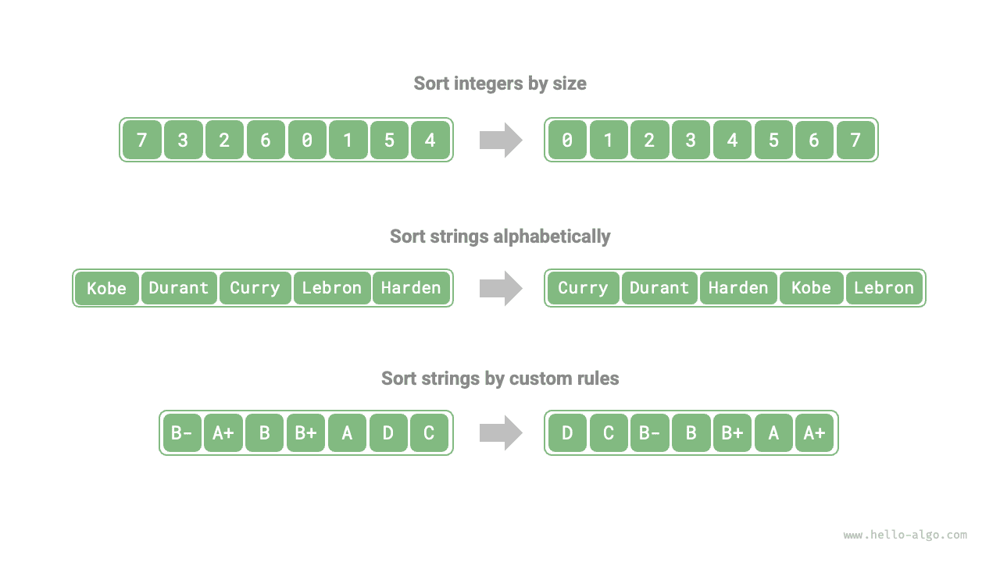

الترتيب
خوارزمية الترتيب
خوارزمية الترتيب (sorting algorithm) ترتّب مجموعة من البيانات وفق ترتيب محدد. ولخوارزميات الترتيب تطبيقات واسعة، لأن البيانات المرتّبة يمكن عادةً بحثها وتحليلها ومعالجتها بكفاءة أعلى.
وكما يوضح الشكل أدناه، قد تكون البيانات المراد ترتيبها أعداداً صحيحة أو أعداداً عشرية عائمة أو محارف أو سلاسل نصية وغيرها. ويمكن تحديد قاعدة الترتيب حسب الحاجة، مثل الترتيب العددي أو ترتيب ASCII أو قاعدة مخصصة.

أبعاد التقييم
كفاءة التنفيذ: نتوقع أن يكون التعقيد الزمني لخوارزميات الترتيب منخفضاً قدر الإمكان، مع عدد إجمالي أقل من العمليات (تقليل المعامل الثابت في التعقيد الزمني). وبالنسبة إلى أحجام البيانات الكبيرة، تكتسب كفاءة التنفيذ أهمية خاصة.
الترتيب في المكان: كما يوحي الاسم، يحقق الترتيب في المكان (in-place sorting) الترتيب عبر العمل مباشرةً على المصفوفة الأصلية دون الحاجة إلى مصفوفات مساعدة إضافية، مما يوفّر الذاكرة. وعادةً ما يتضمن الترتيب في المكان عمليات أقل لنقل البيانات ويعمل بسرعة أكبر.
الاستقرار: يضمن الترتيب المستقر (stable sorting) عدم تغيّر الترتيب النسبي للعناصر المتساوية في المصفوفة بعد اكتمال الترتيب.
يُعدّ الترتيب المستقر شرطاً ضرورياً لسيناريوهات الترتيب متعدد المستويات. لنفترض أن لدينا جدولاً يخزّن معلومات الطلاب، حيث العمود الأول الاسم والعمود الثاني العمر. في هذه الحالة، قد يؤدي الترتيب غير المستقر (unstable sorting) إلى فقدان الطبيعة المرتّبة لبيانات الإدخال:
# بيانات الإدخال مرتّبة حسب الاسم
# (الاسم، العمر)
('A', 19)
('B', 18)
('C', 21)
('D', 19)
('E', 23)
# لنفترض أننا نستخدم خوارزمية ترتيب غير مستقرة لترتيب القائمة حسب العمر.
# في النتيجة، يتغيّر الموضع النسبي للعنصرين ('D', 19) و('A', 19)،
# وبذلك تُفقد خاصية كون بيانات الإدخال مرتّبة حسب الاسم.
('B', 18)
('D', 19)
('A', 19)
('C', 21)
('E', 23)
القدرة على التكيّف: يستطيع الترتيب التكيّفي (adaptive sorting) الاستفادة من معلومات الترتيب القائمة في بيانات الإدخال لتقليل مقدار الحساب، محققاً كفاءة زمنية أفضل. وعادةً ما يكون التعقيد الزمني في أفضل حالة لخوارزميات الترتيب التكيّفية أفضل من التعقيد الزمني المتوسط.
الترتيب القائم على المقارنة أو غير القائم عليها: يعتمد الترتيب القائم على المقارنة (comparison-based sorting) على معاملات المقارنة ($<$, $=$, $>$) لتحديد الترتيب النسبي للعناصر، وبذلك يرتّب المصفوفة كاملة. وحدّه الأدنى للتعقيد الزمني في أسوأ الحالات هو $\Omega(n \log n)$. أما الترتيب غير القائم على المقارنة (non-comparison sorting) فلا يستخدم معاملات المقارنة، ويمكنه تحقيق تعقيد زمني $O(n)$، لكن عموميته محدودة نسبياً.
خوارزمية الترتيب المثالية
سريعة، وفي المكان، ومستقرة، وتكيّفية، وعامة التطبيق. من الواضح أنه لم تُكتشف حتى اليوم خوارزمية ترتيب تجمع كل هذه الخصائص. لذلك، عند اختيار خوارزمية ترتيب، يلزم البتّ بناءً على الخصائص المحددة للبيانات ومتطلبات المسألة.
سنستعرض لاحقاً خوارزميات ترتيب متنوعة، ونحلّل مزاياها وعيوبها استناداً إلى أبعاد التقييم المذكورة أعلاه.